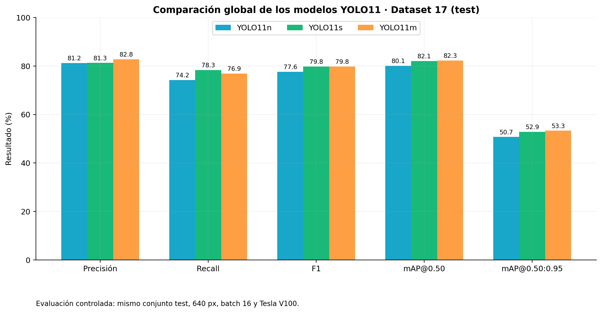
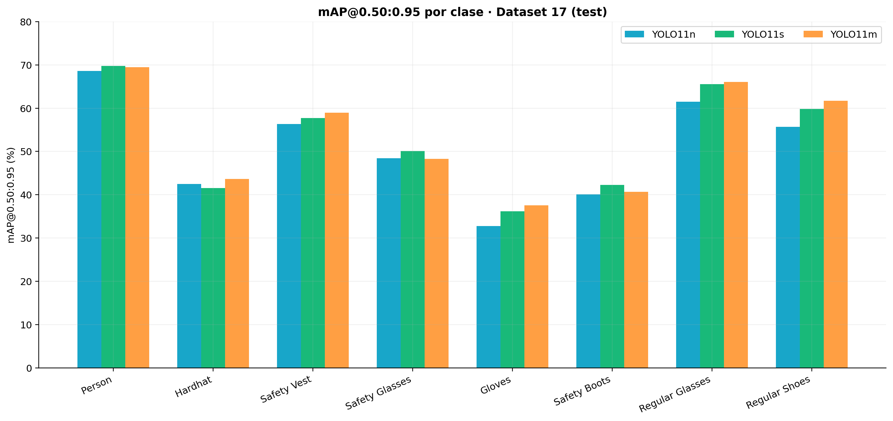
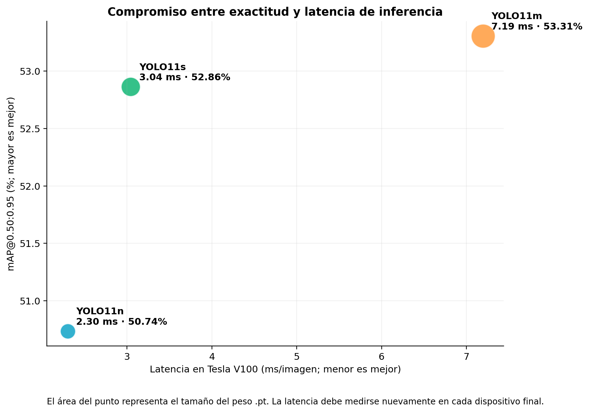
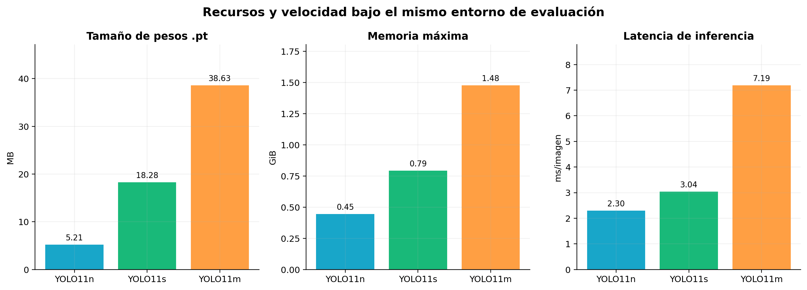

Selección operativa: YOLO11s por equilibrio. YOLO11m maximiza exactitud y YOLO11n minimiza costo.
| Modelo | Precisión | Recall | F1 | mAP50 | mAP50-95 | ms/img V100 |
|---|---|---|---|---|---|---|
| YOLO11n | 0.8123 | 0.7424 | 0.7758 | 0.8011 | 0.5074 | 2.301 |
| YOLO11s | 0.8129 | 0.7832 | 0.7977 | 0.8208 | 0.5286 | 3.044 |
| YOLO11m | 0.8279 | 0.7692 | 0.7975 | 0.8226 | 0.5331 | 7.194 |




Alcance: la latencia procede de una Tesla V100 y no sustituye el benchmark en celulares, tabletas o laptops.